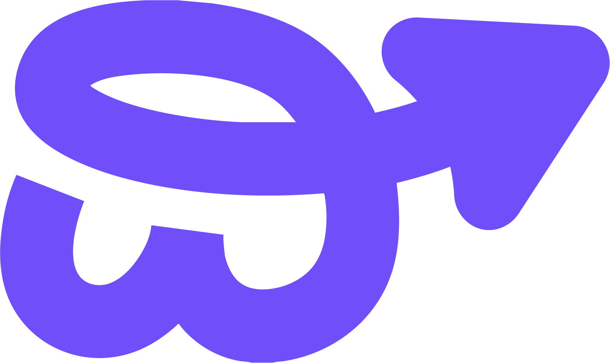
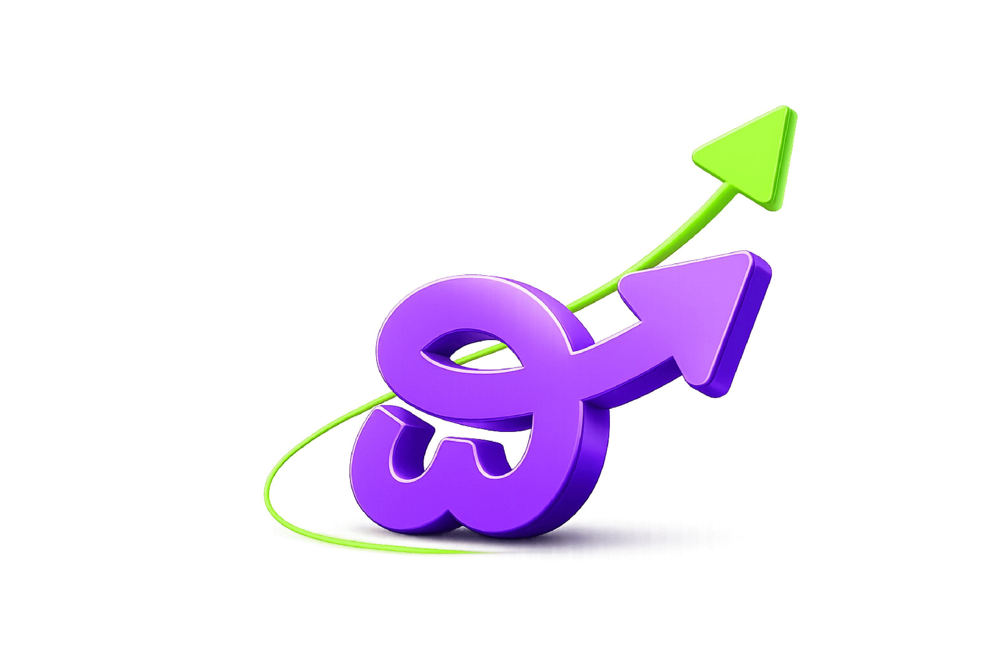
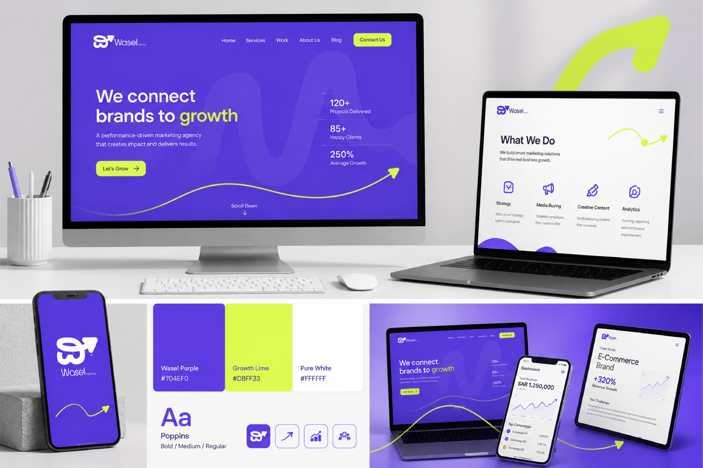
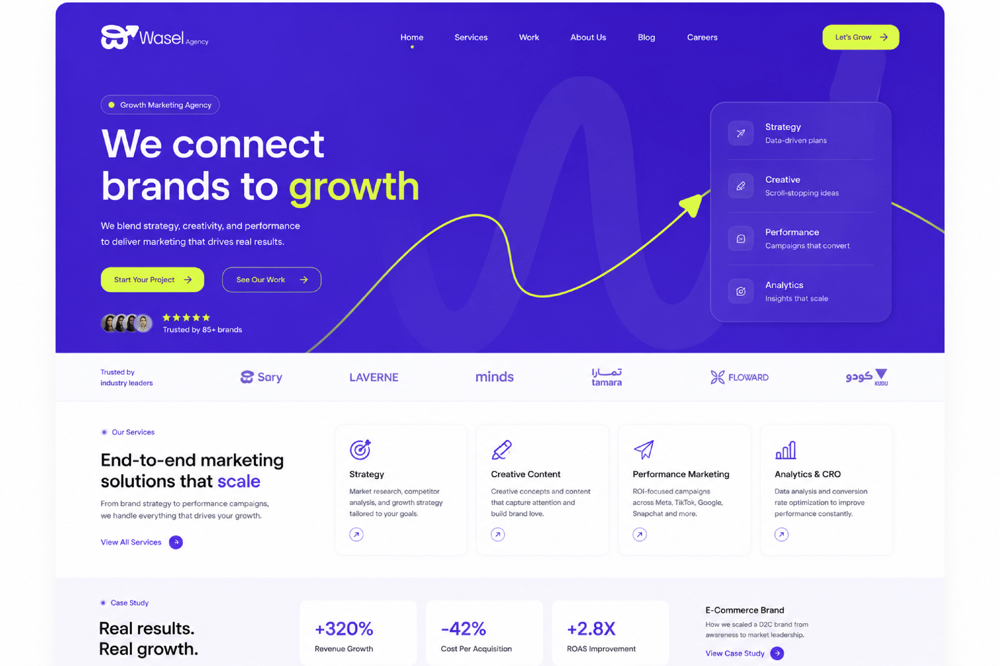

Strategy
Data-driven plans

WaselAgency Use SystemA practical design system for Wasel Agency: bold purple surfaces, lime growth signals, clean white workspaces, and animated upward paths that turn strategy into momentum.

Data-driven plans
Scroll-stopping ideas
Campaigns that convert
Insights that scale
Wasel should feel energetic, clear, and performance-led. The system uses a small palette, large confident type, and a repeating growth arrow motif.
Purple owns the brand. Use it for hero areas, navigation, badges, icons, and campaign surfaces.
Lime is the action color. Reserve it for CTAs, highlights, progress, and arrow-led motion.
White gives the system breathing room. Use it for service cards, dashboards, forms, and content-heavy views.
The PDF names Ara Hamah 1982, while the application mockups use a Poppins-like UI rhythm. This build keeps the round, open spacing while using a reliable web stack.
Growth
We connect brands to growth
Strategy, creative content, performance marketing, and analytics work together as one system.

The flat mark works for compact navigation and product UI. The 3D mark should anchor social posts, launch visuals, pitch covers, and animated growth moments.
Buttons, cards, metrics, navigation, forms, and service modules are shaped around clear action and fast scanning.
Purple shell, lime CTA, translucent metric cards, and motion path in the background.
Animate pathROI-focused campaigns across Meta, TikTok, Google, Snapchat, and growth channels.
Revenue growth after a full-funnel campaign sprint.
Motion rules are based on the brand arrow: curves, lifts, reveals, progress, and confident upward transitions.
Fade in with 16px upward lift. Duration 600ms.
Stroke draws from left to right. Duration 1600ms.
Move 4px up and intensify the lime or purple glow.
Keep state changes visible without continuous animation.
Desktop can carry layered hero visuals and service stacks. Mobile should prioritize brand mark, headline, CTA, and one action at a time.

Wide hero, split content, visible metrics, and layered services.
Grow with precision
Single-column flow, large CTA, compact cards, and fewer overlays.
Keep purple as the world, lime as the action, white as the work surface, and the arrow path as the recurring brand gesture.